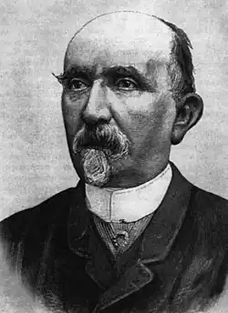

КАРЛО КОЛЛОДІ (Карло Лоренціні) (1826-1890)
Автор книги "Пригоди Піноккіо" народився 1826 року у Флоренції, у відомому в місті сімействі кухаря Лоренціні. На літо хлопчика відвозили за 60 км у містечко Коллоді, на батьківщину матері. Пам'ять про нього виявилася настільки міцною, що юний Карло, зайнявшись журналістикою, зробив ім'я містечка свого дитинства псевдонімом, з яким і ввійшов у літературу – Карло Коллоді. У 1948 році він вступив добровольцем у ряди борців за національне звільнення Італії. Тоді ж почалася його літературна діяльність. Письменник видавав сатиричні журнали "Ліхтар" і "Перестрілка", писав нариси, оповідання, гуморески, посміюючись над італійським суспільством тієї пори.
Один раз редактор флорентійської "Газети для дітей" попросив Карло написати якусь незвичайну казку-пригоду. Ідея, згадував пізніше Карло, так потягнула його, що задум дозрів майже миттєво, і він склав історію за одну ніч! Її головним героєм став дерев'яний чоловічок-маріонетка, який раз у раз потрапляв у прикрі ситуації через нестерпний характер. Коллоді назвав його Піноккіо, від слова "піно" – "сосна", що на тосканській говірці означає "сосновий горішок". Вранці він відправив рукопис у редакцію. 7 липня 1881 року з'явилася перша історія з життя Піноккіо. Письменникові платили по 20 чентезімо (найдрібніша італійська монета) за рядок, повість друкували з продовженням, успіх був приголомшливим! Пару разів Коллоді намагався поставити крапку, але читачі – маленькі й дорослі – завалили редакцію листами, вимагаючи нових пригод героя. І Карло знову брався за перо. Майже за два роки було надруковано тридцять шість глав дивної казки. Нарешті автор сказав собі "Баста!" і перетворив дерев'яного чоловічка на миле живе хлопча. Потім флорентійський видавець Феліче Паджи зібрав усі глави й у 1883 році випустив книжку "Пригоди Піноккіо, історія маріонетки". Один з найулюбленіших письменників Італії пішов з життя в 1890 році. Образ Піноккіо був створений людиною великої душі, розумним і добрим другом дітей. Тому ця книга сповнена чарівності, оптимізму і ніжної любові до своїх героїв, до їхніх слабостей, так схожим на людські. Як діти, так і їхні батьки прочитають цю казку із задоволенням, зі сміхом, а часом – із сумною посмішкою. Адже чарівність цієї чудової книжки вкладено в реальні риси людських характерів. Багато читачів помітять, що їм дуже знайоме за особистим досвідом багато що з рис характеру, властивих цьому нестерпному, доброму, буйному, дотепному, тупому, дурному, як пробка, упертому, як віслюк, плаксивому і сміхотливому, егоїстичному і великодушному Піноккіо! Хочеться сподіватися, що багато маленьких читачів замислиться над життєвим досвідом дерев'яної ляльки і над тим, яким чином з нікчемного іграшкового хлопчиська вийшла справжня людина. Казка надихнула кращих художників Італії, але перший малюнок дерев'яного хлопчиська зробив інженер із Флоренції Енріко Мацанті, що відкрив вражаючу художню галерею Піноккіо і його друзів. Дотепер видавці, готуючи чергове видання Коллоді, друкують малюнки Карло Кьостри й Аттіліо Муссіто, що також створили перші ілюстрації до "Пригод Піноккіо". У флорентійському видавництві Джунті Мерцоккіо, що є законним спадкоємцем видавництва Паджи, є "кімната Піноккіо". Зі сторінок зібраних тут книг дерев'яний хлопчисько промовляє англійською, вірменською, арабською, перською та іншими мовами і навіть одним з діалектів Самоа. За даними ЮНЕСКО, книгу Коллоді перекладено 87 мовами, їй склали 27 продовжень, її 400 разів втілювали на сцені й на екрані. Перший півгодинний фільм про пригоди "соснового горішка" в 1912 році зняв італієць Джуліо Антомаро. Роль Піноккіо виконував відомий клоун. Перша повнометражна мультиплікація про дерев'яного пустунчика з'явилася в 1935 році. Її створив режисер Пауль Вердіні, а в 1940 році вийшов мультфільм Волта Диснея. На початку 70-х років режисер Луїджі Коменчіні зняв спочатку телевізійний, а потім і повнометражний ігровий фільм, визнаний кращою у світі екранізацією пригод Піноккіо. А 2002 року версію знаменитої казки представив режисер і актор Роберто Беніньї, володар премії "Оскар" за картину "Життя прекрасне". Він зіграв самого Піноккіо, а в ролі Дівчинки з блакитним волоссям знялася його дружина Ніколетта Браскі. "Жив собі... "Король!" – негайно викликнуть мої маленькі читачі. Ні, діти, ви не вгадали. Жився-був шматок дерева". Мармурова табличка з цим написом – а саме так починається знаменита повість – зустрічає тепер гостей парку Піноккіо, розташованого недалеко від міста Пістої в маленькому містечку Коллоді. Ідея створити пам'ятник популярному героєві на його батьківщині з'явилася в 1951 році в тодішнього мера містечка професора Роландо Анцелотті. Він оголосив конкурс, у якому брали участь 84 скульптора. Перемогу поділили Еміліо Греко з композицією "Піноккіо і Мальвіна" і Вентуріно Вентурі, що створив "пьяццетту" – площу, оточену стіною із зображеннями персонажів казки з кольорової мозаїки. У 1956 році тут виріс бронзовий п'ятиметровий пам'ятник Піноккіо із сюжетами про його незвичайні пригоди. "Безсмертному Піноккіо – вдячні читачі у віці від чотирьох до сімдесятьох років" – викарбовано на п'єдесталі. У 1963 році архітектор Джованні Микелуччі відкрив тратторію "Червоний Рак", яка відтворює обстановку, у якій відбувалися доленосні події в житті дерев'яного хлопчиська. Незабаром поруч на пагорбі з'явиться парк його друзів – Аліси, що побувала в Країні чудес, персонажів казок братів Грімм, інших улюбленців італійських дітей. Однак місто Коллоді – це не тільки подорож у казку. У 1962 році тут був створений "Національний фонд Карло Коллоді" – унікальна у своєму роді гуманітарна установа, що займається винятково творчістю письменника, який пропагував ідеї добра. У будинку Фонду розташована і незвичайна бібліотека, присвячена Коллоді та його знаменитому творові. На полках – 4,5 тисячі томів, з них 3 тисячі – переклади книги мовами народів світу. Лише Біблію перекладають іноземними мовами частіше, ніж "Піноккіо". Ця казка поєднує дітей різних країн, учить їх жити в мирі, любові та злагоді.